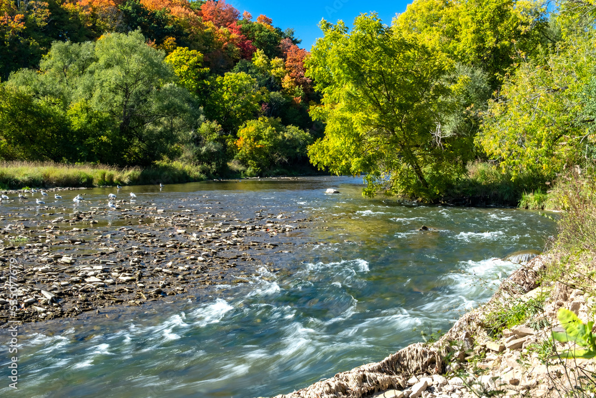

A Moment
by the River
I live near the Credit River. This page brings a little of that feeling here.
0:00 / 1:15

Press play, then move the slider to explore the photo.
I live near the Credit River. This page brings a little of that feeling here.

Press play, then move the slider to explore the photo.